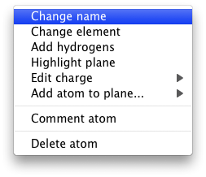
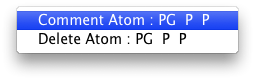

Nigel W. Moriarty
Edit the geometry restraints of a ligand using a Graphical User Interface (GUI) including a 3D view of the ligand and a tabular view of the restraints.
The general procedure is to load a restraints file (CIF) and manipulate the restraints via the table or molecule view. The geometry of the revised restraints can be tested using the Action->Geometry optimisation option. The final restraints can be saved to a CIF file for use with phenix.refine. The corresponding PDB file can also be saved.
Restraints can be loaded into REEL using the command line, the pull-down menu to open a file and a pull-down menu to run eLBOW. Restraints files from eLBOW contain both the restraints and cartesian coordinates. For the purposes of REEL, the coordinates are generated by the restraints and can not be edited directly. The background colour is light steel blue to show that it is not used in the geometry editing actions.
REEL can load a molecule geometry from any format the eLBOW can read, including PDB, Mol2D and SDF. If the file does not contain the bonding information, the bonding is automatically determined using proximity. The limit on the size of molecule that the bonding is automatically determined is set at 200 atoms.
Molecule up to 2000 atoms can be loaded using the --view but only the bond connectivity is determined. The bond order is set to one but can be changed interactively.
Molecules can be loaded into REEL using the --reel option for eLBOW or using the eLBOW GUI dialog available in REEL.
The Chemical Components database can also be accessed using the --chem option so load the cartesian coordinates and atom names of a certain ligand.
The --smiles option will automatically run eLBOW on the SMILES string and load the CIF file in REEL.
It may be that a CIF without cartesian coordinates is the file to be loaded. REEL will load it and attempt but its better to provide the cartesian coordinates. A simple way is to use:
phenix.reel ligand.cif ligand.pdb
and to use the --overlay option to force it in the case of slightly different ligand details (ligand code).
The geometry restraints (bonds, angles, dihedrals, planes and chirals) are the driving coordinates in this editor. The cartesian coordinates are displayed in the atoms table only because there are generated for the viewer display. They are the driven coordinates and are therefore ignored if changed in the editor.
Many cells in the table view of the restraints can be changed but care must be taken to ensure that the changes are local or global. For example, changing an atom name in the bonds table view will only change it in that row. If you wish to change the name of the atom in all the restraints for should use the right mouse menu in the viewer window or change it in the atoms table view. The colour of the cell gives the impression as to whether the changes are propagated elsewhere. The cells, in some cases, have not been made read only to allow the user to make changes as desired.
Clicking an atom in the molecule view will highlight the various related topological elements in the table view and vice versa. Use the checkbox in the table view or a right-mouse pop-menu to remove a restraint from optimisation and output file. Chiral centres can be changed in the table view.
Right clicking in the viewer or in the table view provide pop-menu for various actions. Examples are below.


Double clicking the label headers will sort the rows.
To load a previously created restraints file
phenix.reel atp.cif
To load a restraints file into REEL from eLBOW
phenix.elbow --smiles O --reel
To load all the unknown ligands from a PDB file
phenix.reel model.pdb --do-all
or a single residue
phenix.reel model.pdb --residue ATP